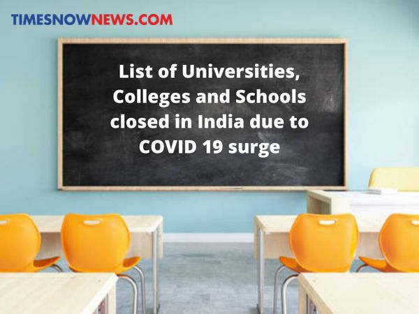

Campus Life
School Church
It was established in 1978
Church is a holy place for the christians. Chirstians are the followers and prayers of Jesus. Christians considered the holy place for Christians. Christianity was formed by the Jesus. Jesus is the God for christians
School Librarey
It was build 1980
A school library (or a school library media center) is a library within a school where students, staff, and often, parents of a public or private school have access to a variety of resources. The goal of the school library media center is to ensure that all members of the school community have equitable access "to books and reading, to information, and to information technology."
School Auditorium
It was established in 1982
All these lavish events demand a set of facilities and technology such that each person in this large space can clearly hear and see everything that is being presented. The physical space of the auditorium is lavish, spacious, airy and comfortable. ... Latest technology is used for the light, sound and projection systems.
Achievements

won first prize in Inter School Debate On Environmental Pollution
Today, Something unexpected happened in my life, Actually It was like a surprise for me, I was completely shocked when I got to know that I’ve won the first prize in my Inter School debate on environmental pollution. It was the second time when I participated in debate competition. At the time when I participated for the very first time so I didn’t secure any position in this competition, At that time I felt a little sad but I decided that I’d do more hard work and I will participate again and I guess that I took the right decision to participate again, Also I learnt that hard work always pays off because At my first participation, I was not concerned towards this competition but when I faced failure then It inspired me to do more hard work and because of that I have gotten this prize, My parents are very proud of me and they have gifted me a cycle for my achievement and now I have known that hard work is most important to achieve success.
won Second prize in Inter School Karate Competition
The object of Karate is to defeat your opponent by utilising punches, kicks and throws to score points. At the end of a Karate kumite, the competitor with the most points is declared the winner (or before the end if they reach and eight point lead over their opponent).
won Second prize in Inter School cycling Competition
bicycle racing is the cycle sport discipline of road cycling, held on paved roads. Road racing is the most popular professional form of bicycle racing, in terms of numbers of competitors, events and spectators. The two most common competition formats are mass start events, where riders start simultaneously (though sometimes with a handicap) and race to set finish point; and time trials, where individual riders or teams race a course alone against the clock. Stage races or "tours" take multiple days, and consist of several mass-start or time-trial stages ridden consecutively.
What’s New
-
Universities, Colleges and Schools closed in India due to COVID 19 surge
Universities, Colleges and Schools in various parts of India are being closed due to the rapid surge in COVID 19 cases. The several States and Union Territories have already taken their decision to shut down the educational institutions. At the same time, others states are scrutinizing the situation to make the decision soon. Here is a list of states and colleges which have already shut their schools, universities and colleges due to the COVID 19 surge.
States including Haryana, Odisha, West Bengal, Uttar Pradesh, Bihar and Rajasthan have closed down schools and colleges in the state. Several universities have also postponed their examinations scheduled. However, most of the schools and colleges have been given permission to continue their online classes for the students. -
How closing schools for another year may set India back a few years
Last week, Delhi announced that it was shutting schools until further notice, and that classes would resume only through the online mode. Delhi, however, was not the only state to order a shutdown or suspension of classes.
Maharashtra, Punjab, Chhattisgarh, UP have all shut schools, given the rise in coronavirus infections as India battles a second wave. Although one would expect Indian education to have become resilient to Covid-19 concerns, there are many lacunae that the government needs to address. Data from the final ASER report, released in February this year, highlights that ... -
Why B-Schools in India should include AI and Robotics in curriculum
Artificial intelligence (AI) and Robotics have already started to challenge the conventional methods of businesses. For instance, AI bots are increasingly being used to handle routine customer queries and some intelligent machines are even able to monitor faults and security breaches.
As a result, many B-schools in India have started to include this in their curriculum. While a management graduate may not use these technologies the way an engineer would, they need to know their impact on the business world. -
IIM Bangalore’s 46th convocation sees 624 students graduate in virtual mode
IIMB hosted its 46th Convocation on April 16 (Friday), 2021. The entire event was held, in the virtual mode, in the presence of the Chairperson of the IIMB Board of Directors Dr Devi Shetty, IIMB Director Professor Rishikesha T Krishnan, Dean Programmes Professor Abhoy Ojha, Dean Faculty Professor Chetan Subramanian, Dean Administration Professor Rajendra K Bandi, Dean Alumni Relations and Development Professor K Kumar, Chairpersons of all the programmes and faculty members. The event included the award of gold medals.
My Album

Mukesh Ambani
Mukesh Ambani

Mahatma Gandhi
Mahatma Gandhi
AB de Villiers

Varun Dhawan